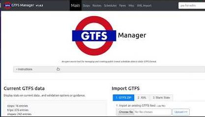

An open source tool for managing and creating public transit schedules data in static GTFS format.

Click here to see a demo video.
Display stats on current data.
Loading stats..
3. to start making a GTFS feed from scratch.
If you feel like your data is ready, choose a commit name and press the button to create a freshly minted GTFS feed!
Listing past commits with links to download GTFS feed zip.
(latest first, oldest last)